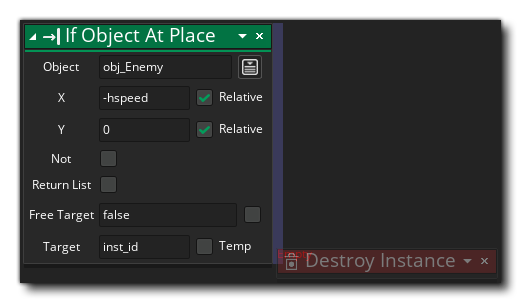

Si el objeto en Si el objeto en
Si el objeto en Si el objeto en Esta acción se usa para verificar y ver si hay una colisión con una instancia de un objeto dado. Le das al objeto para verificar la posición, que puede ser una posición absoluta o una posición relativa a la instancia, y la acción volverá. true si hay una colisión o false si no hay También puede comprobar el "No" bandera para comprobar si no hay una colisión en la posición dada, y la acción A continuación, volver true si no se encuentran colisiones y false de otra manera. Las colisiones se calculan en función de la máscara de colisión de la instancia de llamada que se superpone a la máscara de colisión de la instancia u objeto que se está comprobando (como si se estuviera "colocando" en la posición).
¡IMPORTANTE! Las colisiones solo se registrarán en aquellas instancias que tengan una máscara de colisión válida, es decir, que tengan un sprite asignado a la sprite_index, o un sprite asignado a mask_index. Si ninguna de las instancias en la colisión tiene una máscara de colisión, entonces la colisión no se detectará, independientemente de lo que la instancia esté dibujando en ese momento.Tenga en cuenta que para agregar acciones a un bloque "if", deben soltarse al lado de la acción, como se muestra en la imagen a continuación: 
Argumento Descripción Object El objeto para verificar instancias de x La posición x para verificar y La posición y para verificar
El código de bloque de acción anterior comprueba una colisión con cualquier instancia del objeto "obj_Wall" hacia la izquierda y hacia la derecha y, si se encuentra una, invierte la dirección horizontal de la instancia de llamada.